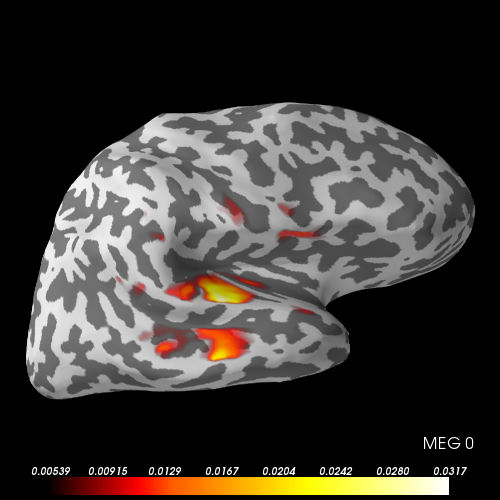

Compute point-spread functions (PSFs) for MNE/dSPM/sLORETA¶
PSFs are computed for four labels in the MNE sample data set for linear inverse operators (MNE, dSPM, sLORETA). PSFs describe the spread of activation from one label across the cortical surface.
Script output:
Reading forward solution from /data1/agramfort/work/src/mne-python/examples/MNE-sample-data/MEG/sample/sample_audvis-meg-eeg-oct-6-fwd.fif...
Reading a source space...
Computing patch statistics...
Patch information added...
Distance information added...
[done]
Reading a source space...
Computing patch statistics...
Patch information added...
Distance information added...
[done]
2 source spaces read
Desired named matrix (kind = 3523) not available
Read MEG forward solution (7498 sources, 306 channels, free orientations)
Desired named matrix (kind = 3523) not available
Read EEG forward solution (7498 sources, 60 channels, free orientations)
MEG and EEG forward solutions combined
Source spaces transformed to the forward solution coordinate frame
Converting to surface-based source orientations...
Average patch normals will be employed in the rotation to the local surface coordinates....
...
Python source code: plot_mne_point_spread_function.py
# Authors: Olaf Hauk <olaf.hauk@mrc-cbu.cam.ac.uk>
# Alexandre Gramfort <alexandre.gramfort@telecom-paristech.fr>
#
# License: BSD (3-clause)
from mayavi import mlab
import mne
from mne.datasets import sample
from mne.minimum_norm import read_inverse_operator, point_spread_function
print(__doc__)
data_path = sample.data_path()
subjects_dir = data_path + '/subjects/'
fname_fwd = data_path + '/MEG/sample/sample_audvis-meg-eeg-oct-6-fwd.fif'
fname_inv_eegmeg = (data_path +
'/MEG/sample/sample_audvis-meg-eeg-oct-6-meg-eeg-inv.fif')
fname_inv_meg = data_path + '/MEG/sample/sample_audvis-meg-oct-6-meg-inv.fif'
fname_label = [data_path + '/MEG/sample/labels/Aud-rh.label',
data_path + '/MEG/sample/labels/Aud-lh.label',
data_path + '/MEG/sample/labels/Vis-rh.label',
data_path + '/MEG/sample/labels/Vis-lh.label']
# read forward solution
forward = mne.read_forward_solution(fname_fwd, force_fixed=False,
surf_ori=True)
# read inverse operators
inverse_operator_eegmeg = read_inverse_operator(fname_inv_eegmeg)
inverse_operator_meg = read_inverse_operator(fname_inv_meg)
# read label(s)
labels = [mne.read_label(ss) for ss in fname_label]
# regularisation parameter
snr = 3.0
lambda2 = 1.0 / snr ** 2
method = 'MNE' # can be 'MNE' or 'sLORETA'
mode = 'svd'
n_svd_comp = 1
stc_psf_eegmeg, _ = point_spread_function(
inverse_operator_eegmeg, forward, method=method, labels=labels,
lambda2=lambda2, pick_ori='normal', mode=mode, n_svd_comp=n_svd_comp)
stc_psf_meg, _ = point_spread_function(
inverse_operator_meg, forward, method=method, labels=labels,
lambda2=lambda2, pick_ori='normal', mode=mode, n_svd_comp=n_svd_comp)
# save for viewing in mne_analyze in order of labels in 'labels'
# last sample is average across PSFs
# stc_psf_eegmeg.save('psf_eegmeg')
# stc_psf_meg.save('psf_meg')
clim = dict(kind='percent', lims=[93, 99, 100])
time_label = "EEGMEG %d"
brain_eegmeg = stc_psf_eegmeg.plot(surface='inflated', hemi='rh',
subjects_dir=subjects_dir,
time_label=time_label, clim=clim,
figure=mlab.figure(size=(500, 500)))
time_label = "MEG %d"
brain_meg = stc_psf_meg.plot(surface='inflated', hemi='rh',
subjects_dir=subjects_dir,
time_label=time_label, clim=clim,
figure=mlab.figure(size=(500, 500)))
# The PSF is centred around the right auditory cortex label,
# but clearly extends beyond it.
# It also contains "sidelobes" or "ghost sources"
# in middle/superior temporal lobe.
# For the Aud-RH example, MEG and EEGMEG do not seem to differ a lot,
# but the addition of EEG still decreases point-spread to distant areas
# (e.g. to ATL and IFG).
# The chosen labels are quite far apart from each other, so their PSFs
# do not overlap (check in mne_analyze)
Total running time of the example: 10 seconds